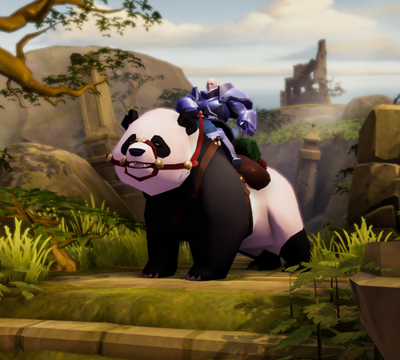
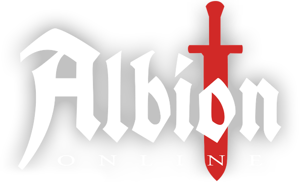

Ödül görseli buraya gelecek
(public/gorseller/odul.png dosyasını ekleyin)
(public/gorseller/odul.png dosyasını ekleyin)
Ödülünü Kazanmaya Hazır Mısın?
Ödülünü almak için hemen giriş yap.


Ödülünü almak için hemen giriş yap.